Chapter 1 Basic Concepts of Statistics
In this chapter, we’ll introduce some of the basic concepts and definitions that are fundamental to the study of Probability and Statistics. In particular, sampling and sample statistics will be examined.
1.1 Populations, Samples, and Processes
Definition 1.1 A population is a well-defined complete collection of objects.
Definition 1.2 A sample is a subset of the population.
Definition 1.3 A population parameter is a numerical value that describes a characteristic of a population.
Definition 1.4 A sample statistic is a numerical value that describes a characteristic of a sample.
Example 1.1 A student is interested in the average grade point average (GPA) of CSU students. She collects the GPAs of eight friends and finds an average of 2.87. For this example, determine the population, sample, parameter, and statistic.
\(~\)
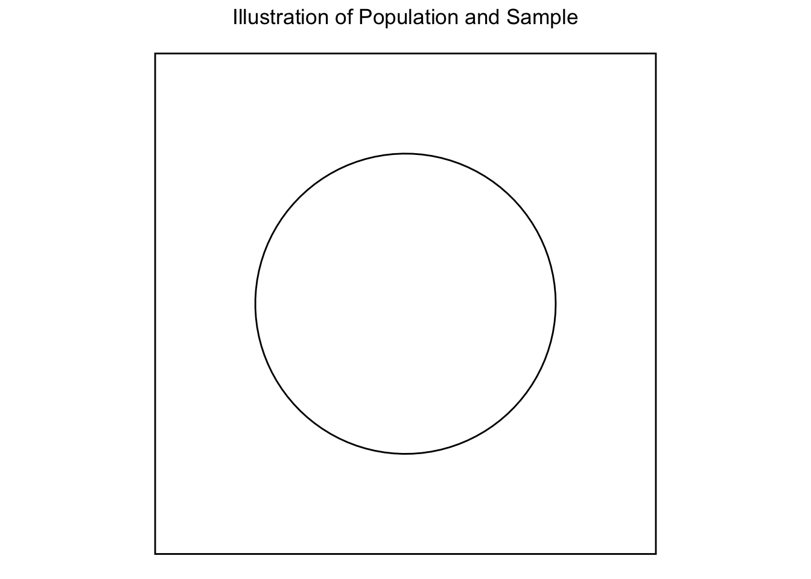
\(~\)
\(~\)
\(~\)
\(~\)
1.2 Methods of Collecting a Sample
Definition 1.5 Simple Random Sampling (SRS) is a basic sampling method used in statistics where every individual or element in a population has an equal chance of being selected. This method ensures that the sample is unbiased.
Example 1.2 Suppose we want to collect a simple random sample of CSU student GPAs. How might we do this?
\(~\)
\(~\)
\(~\)
\(~\)
Definition 1.6 Convenience Sampling is a sampling method where the sample is taken from a group of people that are easy to reach or readily available. This method relies on selecting individuals who are most conveniently accessible to the researcher, rather than using a random or systematic approach.
Example 1.3 Suppose we want to collect a convenience sample of CSU student GPAs. How might we do this?
\(~\)
\(~\)
\(~\)
\(~\)
Definition 1.7 Stratified Sampling is a probability sampling method where the population is divided into distinct subgroups or “strata” that share similar characteristics, and a random sample is then taken from each stratum. This approach ensures that each subgroup is adequately represented in the final sample, leading to more precise and reliable estimates.
Example 1.4 Suppose we want to collect poll data for the presidential election for 250 voters. Further, suppose a recent poll found that 36% of voters are registered with the Democratic Party, 31% of voters are registered with the Republican Party, and 33% are not registered for either major party. How might we collect a stratified sample and what’s the advantage compared to SRS?
\(~\)
\(~\)
\(~\)
\(~\)
Note: While there are many other more complex techniques to sample, we’ll generally assume that any sample collected in this class is a simple random sample.
Data can be either collected in an observational study or in an experiment.
Definition 1.8 In an observational study, data is collected without manipulating the environment or influencing how the data naturally occur.
Example 1.5 How might one collect data to investigate a connection between smoking and cancer?
\(~\)
\(~\)
\(~\)
\(~\)
Definition 1.9 In an experiment, participants are assigned to different treatment groups to determine if the treatment causes changes in the outcome. A key component is the control group, where participants receive no treatment or a standard one, serving as a baseline for comparison. This setup helps establish causality by isolating the effect of the treatment from other variables.
Example 1.6 Why might it be difficult to conduct a controlled experiment investigating smoking and cancer?
\(~\)
\(~\)
\(~\)
\(~\)
Example 1.7 Suppose we want to set up a controlled experiment to investigate the efficacy of a new blood pressure reduction drug. We begin by randomly sampling 100 people with high blood pressure. How would we set up a controlled experiment?
\(~\)
\(~\)
\(~\)
\(~\)
In addition to the sampling method, bias may still occur if participants in an experiment are aware of the treatment they are receiving. This awareness can influence their behavior or responses, potentially skewing the results.
Example 1.8 20 patients are being treated for depression, half are given an antidepressant and half are given a sugar pill (). Suppose the patients know which pill they have been given. How might this cause the results to be biased?
\(~\)
\(~\)
\(~\)
\(~\)
Definition 1.10 Blinded Experiments
A blinded experiment is an experiment in which participants do not know which treatment they are receiving.
A double-blinded experiment is an experiment in which both the participants and the researchers do not know which treatment is being administered during the experiment.
A triple-blinded experiment is an experiment in which the participants, the researchers, and the analysts evaluating the data are all unaware of which treatment is being administered. This approach further reduces the potential for bias at all stages of the experiment.
1.3 Types of Data
We will break data into two categories: quantitative and qualitative.
Definition 1.11 Quantitative data is numeric data or numbers and can broken into two further categories, discrete and continuous.
Discrete data is quantitative data with a finite or countably infinite number of values.
Continuous data is quantitative data with an uncountably infinite number of values or data taken from an interval.
Example 1.9 Give examples of discrete and continuous data.
\(~\)
\(~\)
\(~\)
\(~\)
Definition 1.12 Qualitative data refers to names, categories, or descriptions and can also be broken down into two further categories, nominal and ordinal.
Nominal data is qualitative data with no natural ordering.
Ordinal data is qualitative data with a natural ordering.
Example 1.10 Give examples of nominal and ordinal data.
\(~\)
\(~\)
\(~\)
\(~\)
1.4 Summarizing Qualitative Data
While we will mostly focus on quantitative data in this class, there are a few simple methods for describing qualitative data that you should be aware of.\
Example 1.11 Let’s collect some data on eye color from members of the class and then explore some statistical and graphical summaries.
Data:
Frequency Table Bar Graph
Proportions: \(p=\frac{\#\text{ in category}}{\#\text{ total}}\)
What proportion are brown?
Percentages: \(P\% = p \cdot 100\)
What percentage are blue?
1.5 Visualizing Quantitative Data
Definition 1.13 A histogram visualizes the distribution of a dataset by grouping data into bins and plotting the frequency of data points in each bin. The x-axis represents the data range, and the y-axis shows the frequency of occurrences. Histograms are useful for understanding the shape, central tendency, and spread of data.
Example 1.12 14 students were randomly sampled and were asked how many credits they are taking this semester.
Data: 12, 14, 15, 12, 9, 18, 22, 15, 16, 14, 14, 12, 3, 17
| Class | Frequency | Relative Frequency | Percentage Frequency |
| \([0,3)\) | |||
| \([3,6)\) | |||
| \([6,9)\) | |||
| \([9,12)\) | |||
| \([12,15)\) | |||
| \([15,18)\) | |||
| \([18,21)\) | |||
| \([21,24)\) | |||
| Total |
Histogram
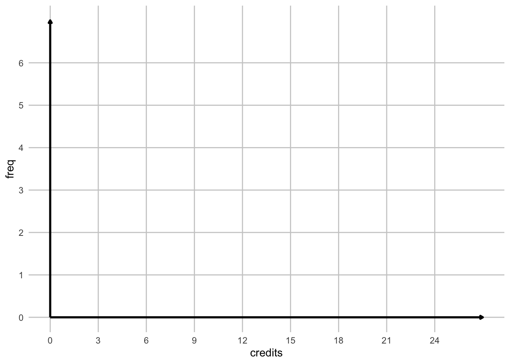
## Loading required package: gridExtra##
## Attaching package: 'gridExtra'## The following object is masked from 'package:dplyr':
##
## combineHistogram shapes
1. Unimodal
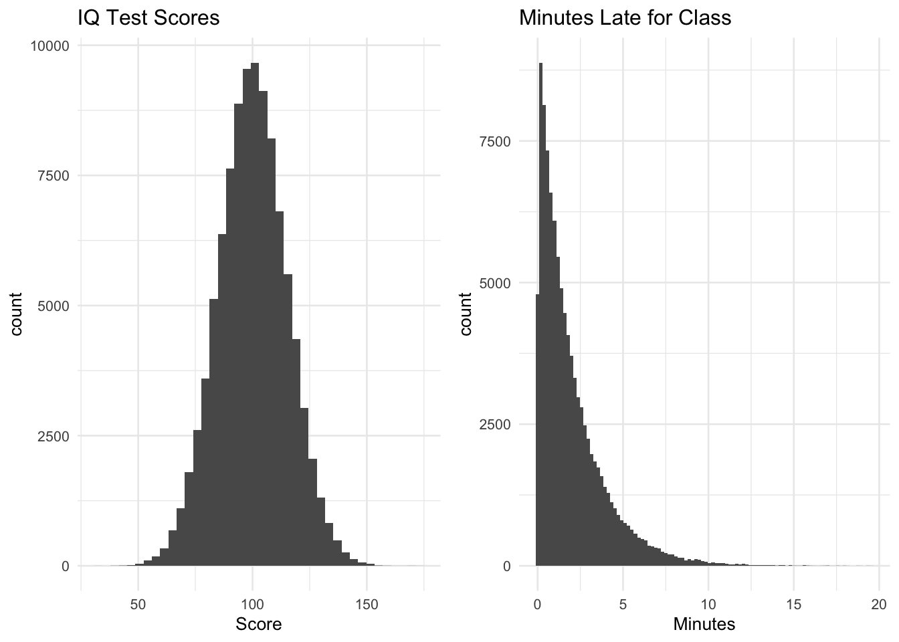
2. Bimodal
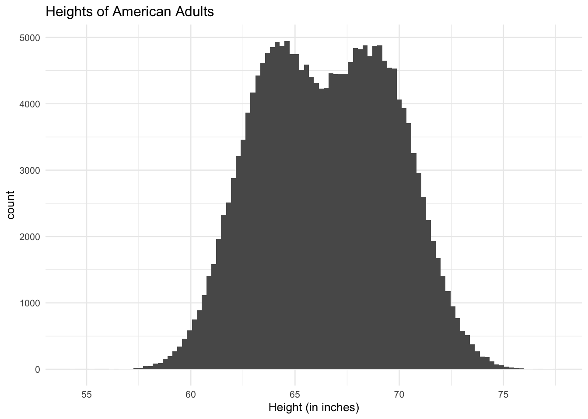
3. Bell-shaped
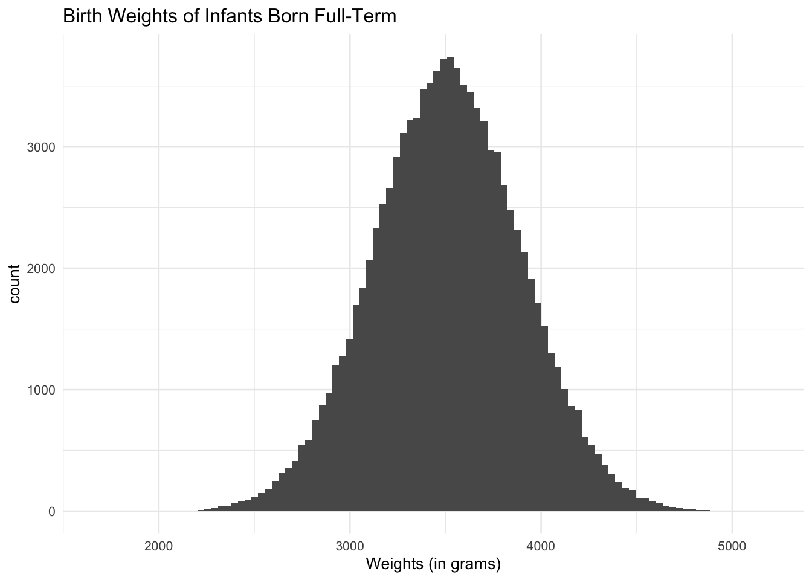
4. Positively (right) skewed - tail is on the right
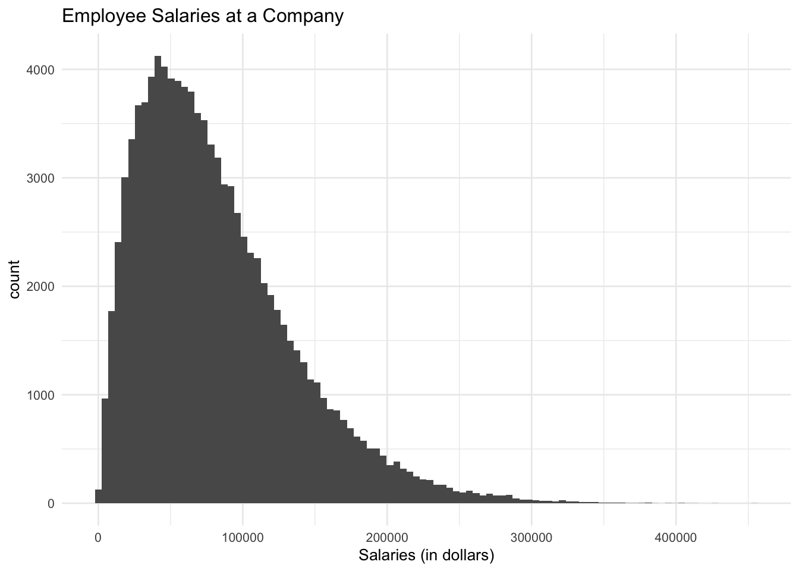
5. Negatively (left) skewed - tail is on the left
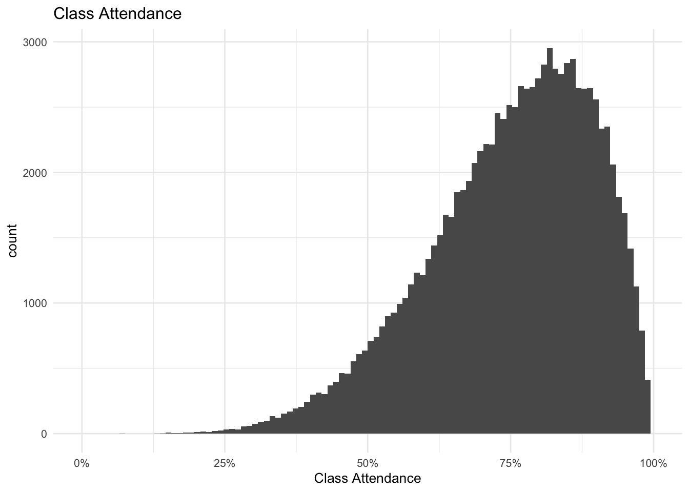
6. Symmetric
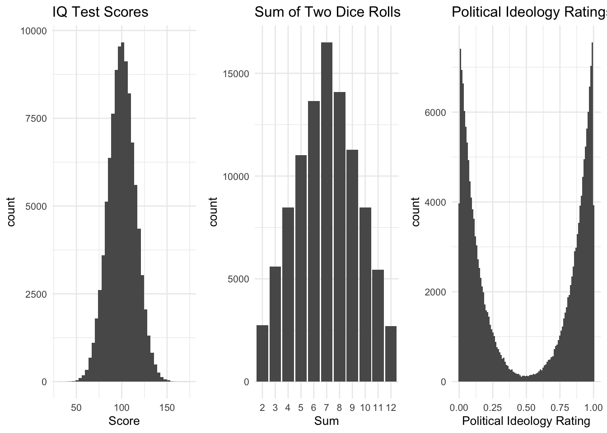
Box Plots
Definition 1.14 A box plot, or box-and-whisker plot, visualizes data distribution using a five-number summary: minimum, first quartile, median, third quartile, and maximum [more on these later]. The box shows the interquartile range (IQR), and the whiskers extend to values within 1.5 times the IQR. Outliers are plotted as individual points. Box plots are useful for comparing distributions and spotting outliers.
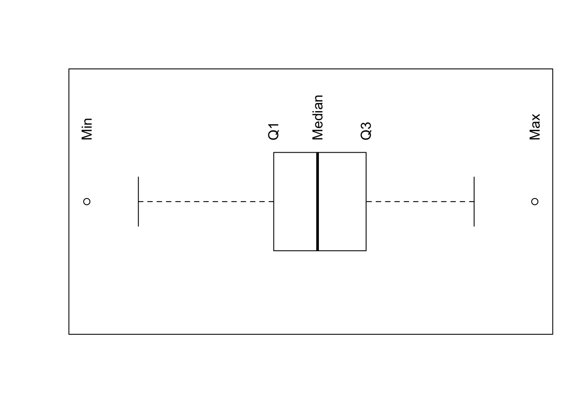
Example 1.13 Here are some examples of box plots.
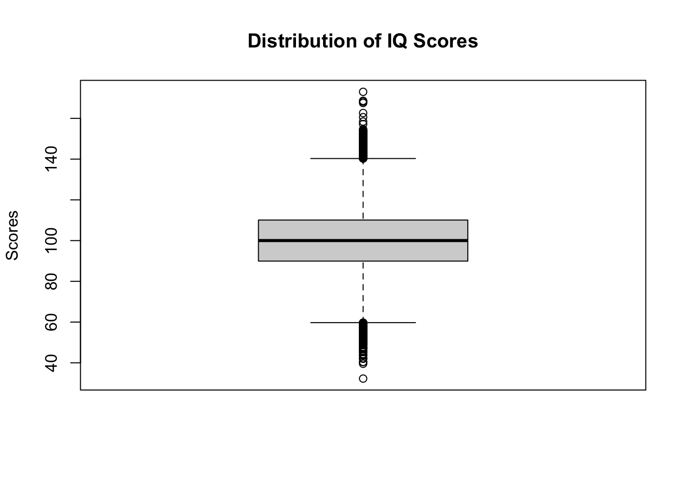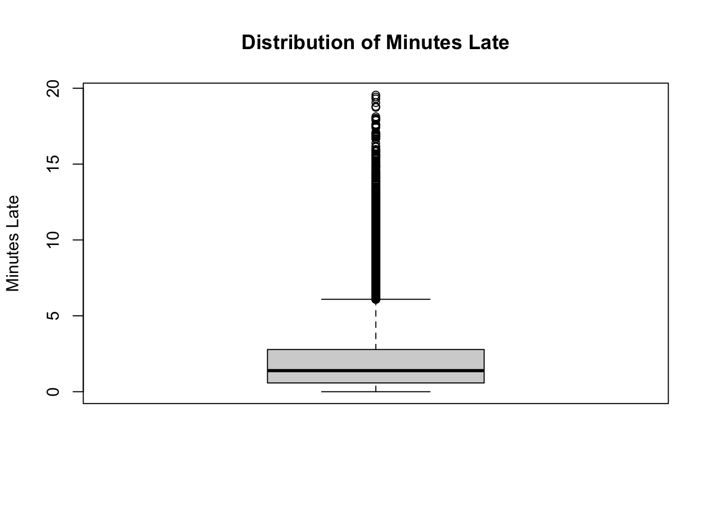
1.6 Summary Statistics for Quantitative Data
Example 1.14 For the following exercises, we will use the following data set. The heights of five students are measured to be (in cm): 183, 165, 165, 175, 187.
Notation: \(\sum_{i=1}^n x_i = x_1 + x_2 + ... + x_n\)
Example 1.15 What is \(\sum x_i\), the sum of all heights in the sample?
\(~\)
\(~\)
\(~\)
\(~\)
There are many ways to measure the ``center” of our data set. We will look at mean, median, and mode.
Definition 1.15 The sample mean (or sample average) \(\bar{x}\) is given by: \(\bar{x} = \frac{\sum_{i=1}^n x_i}{n}\).
Example 1.16 What is the sample mean of the original heights data set, \(\bar{x}\)?
\(~\)
\(~\)
\(~\)
\(~\)
Definition 1.16 The sample median \(\tilde{x}\) is obtained by first ordering the \(n\) observations from smallest to largest and then calculated by the following:\
\[ \tilde{x} = \begin{cases} \mbox{the single middle value if $n$ is odd}, & \tilde{x} = x_{(n+1)/2} \\ \mbox{the average of the two middle values if $n$ is even}, & \tilde{x} = ( x_{n/2} + x_{n/2 + 1 })/2 \end{cases} \]
Example 1.17 What is the sample median of the heights data set, \(\tilde{x}\)?
\(~\)
\(~\)
\(~\)
\(~\)
Example 1.18 If we measure an additional person at 174cm, what is the new median of the data set?
\(~\)
\(~\)
\(~\)
\(~\)
Definition 1.17 The sample mode is the most commonly occurring data point.
Example 1.19 What is the sample mode of the heights data set?
\(~\)
\(~\)
\(~\)
\(~\)
Measures of Variability
There are a few different ways to describe the variability of a data set, including range, variance, standard deviation, and interquartile range.
Definition 1.18 The range of a data set is the difference between the largest and the smallest values.
Example 1.20 What is the range of the heights data set?
\(~\)
\(~\)
\(~\)
\(~\)
Typically, the most common method for measuring the spread of a data set is variance or standard deviation.
Definition 1.19 The sample variance, denoted by \(s^2\), is given by:
\(s^2 = \sum_{i=1}^n\frac{(x_i - \bar{x})^2}{n-1}\)
Definition 1.20 The sample standard deviation, denoted by s, is given by:
\(s = \sqrt{s^2} = \sqrt{\sum_{i=1}^n\frac{(x_i - \bar{x})^2}{n-1}}\)
Example 1.21 Using the heights data set, calculate the sample variance and standard deviation.
| i | 1 | 2 | 3 | 4 | 5 | \(\Sigma\) |
| \(x_i\) | ||||||
| \(x_i - \bar{x}\) | ||||||
| \((x_i - \bar{x})^2\) |
\(~\)
\(~\)
\(~\)
\(~\)
Definition 1.21 The z-score measures the number of standard deviations an observation is from the mean: \(z_i = \frac{x_i-\bar{x}}{s}\)
Definition 1.22 A percentile is a measure of relative standing. The \(p^{th}\) percentile is the number where at least p% of the data values are less than or equal to this number.
Special percentiles:
- \(25^{th}\) percentile = 1\(^{st}\) quartile = \(Q_1\)
- \(50^{th}\) percentile = 2\(^{nd}\) quartile = \(Q_2\) = median
- \(75^{th}\) percentile = 3\(^{rd}\) quartile = \(Q_3\)
Example 1.22 Calculate \(Q_1\) and \(Q_3\) of the heights data set.
\(~\)
\(~\)
\(~\)
\(~\)
Definition 1.23 The interquartile range (IQR) is a measure of statistical dispersion, representing the difference between the first quartile (Q1) and the third quartile (Q3). It captures the range of the middle 50% of the data, indicating the spread of the central portion of the dataset. It is given by: \(Q_3 - Q_1\).
Example 1.23 Calculate IQR for the heights data set.
\(~\)
\(~\)
\(~\)
\(~\)
Definition 1.24 An outlier is a data point that lies far outside of the normal range of the rest of the data.
Rule of thumb: Data points smaller than \(Q_1 - 1.5 \cdot IQR\) or larger than \(Q_3 + 1.5 \cdot IQR\) are outliers.
Definition 1.25 The five-number summary is a statistical description of a dataset, consisting of the minimum, first quartile (Q1), median (Q2), third quartile (Q3), and maximum. It provides a quick overview of the data’s distribution, highlighting its center and spread.
The five numbers are: minimum, \(Q_1\), median, \(Q_3\), maximum.
Example 1.24 What is the five number summary for the heights data set?
\(~\)
\(~\)
\(~\)
\(~\)
1.7 Notation for Population Parameters and Sample Statistics
Some care must be given when reporting a mean, variance, or standard deviation, as it is more important to distinguish between population and sample.
| Mean | Median | Variance | Standard Deviation | |
| Population | \(\mu\) | \(\tilde{\mu}\) | \(\sigma^2\) | \(\sigma\) |
| Sample | \(\bar{x}\) | \(\tilde{x}\) | \(s^2\) | \(s\) |
1.8 Descriptive Statistics vs. Inferential Statistics
After a sample is taken, there are a variety of ways to describe the sample. This is the realm of Descriptive Statistics. We can describe our sample with numbers (statistics) or pictorially.
Later in the semester, we will examine Inferential Statistics. In Inferential Statistics, our goal is to use characteristics of a sample to say something about the full population (see Inferential Statistics).
Connection between Probability and Statistics
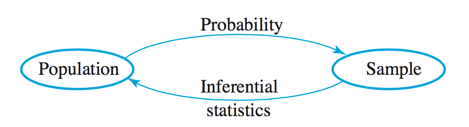
If we know the characteristics of a population, the study of Probability will help us determine the likelihood that a sample will have certain characteristics.
Likewise, Statistics can potentially help us use the characteristics of a sample to say something about the population.
1.9 R Companion for Chapter 1
Let’s manually enter the heights data set (183, 170, 160, 175, 187) from chapter 1 and the following R commands will do the calculations we completed by hand.
Lines of code that begin with are comments and are not executed by the computer. Lines of code that begin with denote the output.
# manually enter your data by using the "c" command
heights = c(183,165,165,175,187)
# calculate sample statistics on data set
mean(heights)## [1] 175## [1] 175## [1] 102## [1] 10.0995We can also create a histogram in R. Note that we can specify the breaks for the bins. In this case, the breaks are defined at 160, 170, 180, 190.
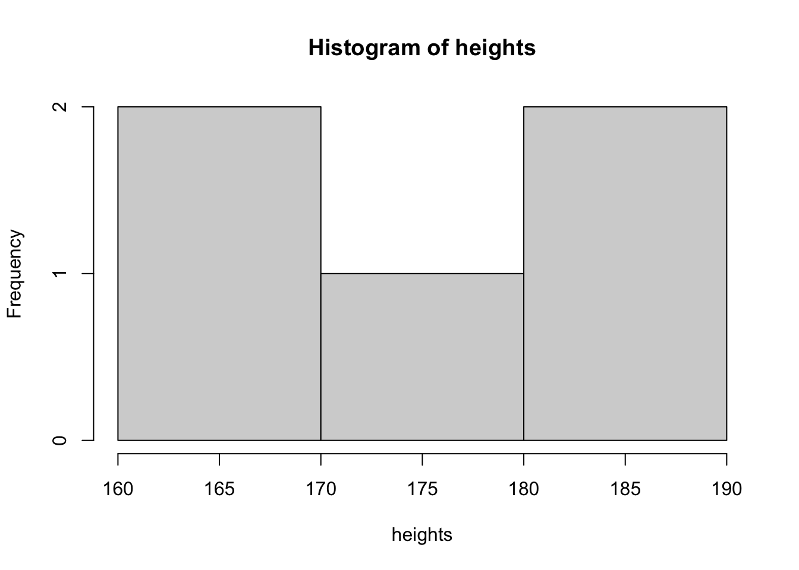
Let’s create a randomized dataset of eye colors and analyze the data.
When we generate random data in this class, we will use the function, so that we all generate the same random data. If we don’t use the command before generating random data, we will all get different random data.
Here, we generate 47 random eye colors and take a look at the first few observations.
set.seed(2020)
eye.colors = sample(c("amber", "blue", "brown", "gray", "green",
"hazel", "red"), 47, replace = T)
# the "head" function will give the first few data values
# or the "header" of the dataset
head(eye.colors)## [1] "gray" "gray" "red" "hazel" "amber" "amber"We can create a frequency table of these values and create a barplot.
## eye.colors
## amber blue brown gray green hazel red
## 3 10 3 10 7 8 6barplot(table(eye.colors), xlab = "eye color",
ylab = "frequency", main = "Bar plot of eye color occurance")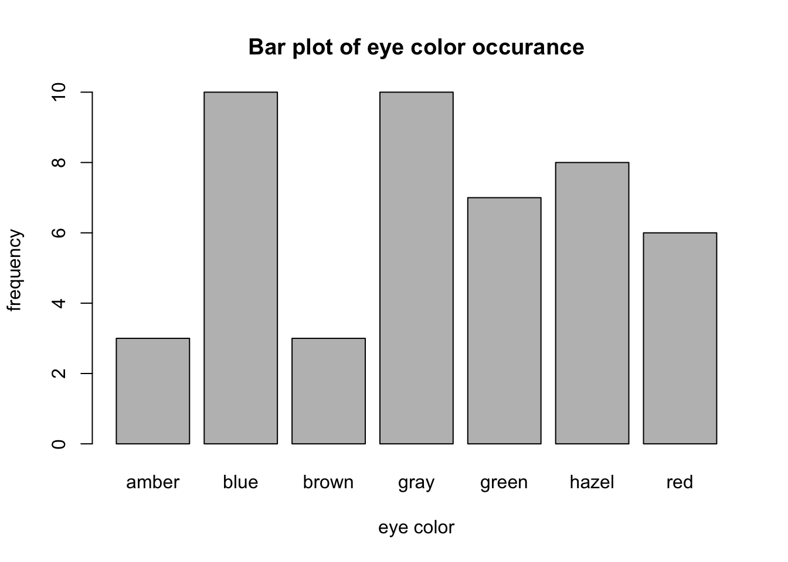
We can also calculate proportion and percentage tables.
## eye.colors
## amber blue brown gray green hazel red
## 3 10 3 10 7 8 6## [1] 47## eye.colors
## amber blue brown gray green hazel red
## 0.06382979 0.21276596 0.06382979 0.21276596 0.14893617 0.17021277 0.12765957## eye.colors
## amber blue brown gray green hazel red
## 6.382979 21.276596 6.382979 21.276596 14.893617 17.021277 12.765957